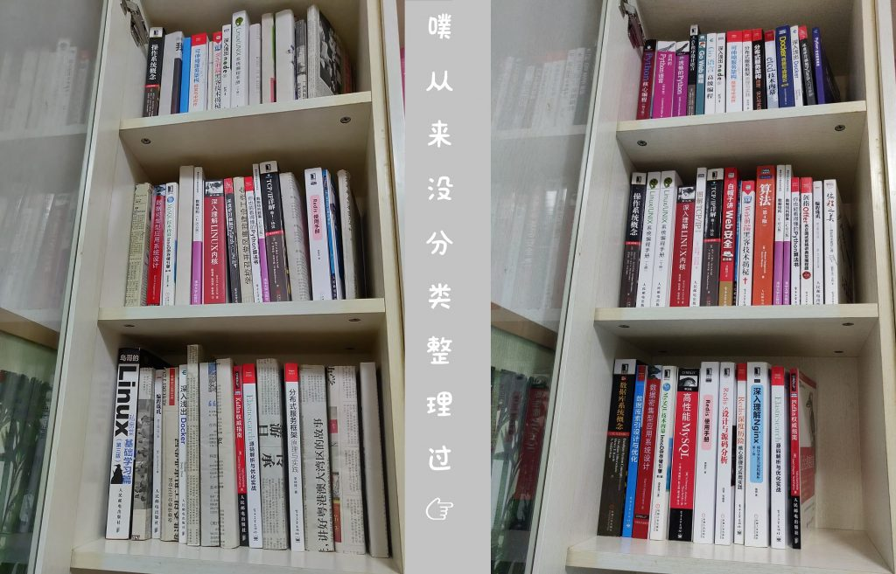
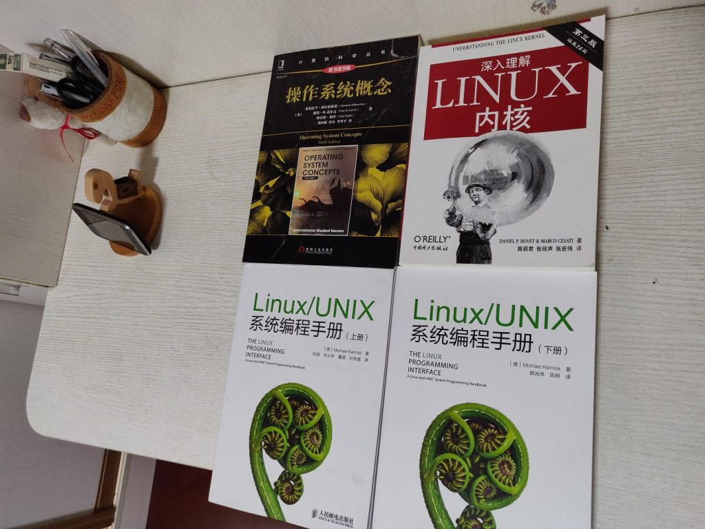
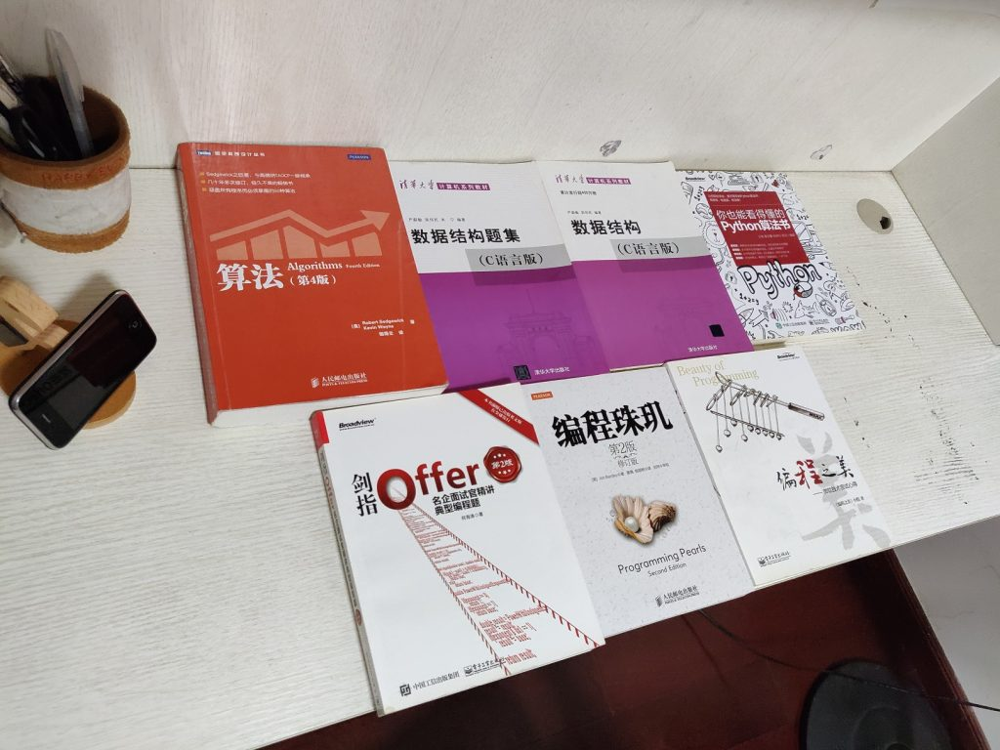

“2019”
时间过得飞快，还有几个月就毕业满两年了，毫无疑问经历了非常充实的一段时间，现在回过头来看甚至觉得这段经历不属于自己。
时间回到2019年中，不知道处于什么原因，突然觉得要将落下的知识补一补，毕竟受限于学历和专业，不被看好是再正常不过的了。
虽然不确定未来会怎么样，但是还是尝试了一下，至少也要缩小一点差距。于是大概也是那时开始，周末坚持早起和中考高考考研的同学一起呆在图书馆，坚持借书买书看书。我本来以为自己很快就会偷懒，不过幸运的是所学所接触的内容似乎并没有让自己感到疲倦。一年时间很快就过了，现在我的书架长这个样子：
 虽然有没有完整看完的书，不过也有经典的著作读了好几遍还意犹未尽，每次都有新的收获。将自己包的报纸书皮一个一个拆开有点舍不得，但是看到书还保护得这么新还是很开心的。
奇怪的书
所谓“奇怪”大概就是，为什么用不上的东西我一定要去看，当然这是以前的想法，现在我知道这些东西是真的非常宝贵。

脑筋急转弯
好吧其实这个东西比前面“奇怪的书”更加不明白什么时候才能用得上，但是搞起来之后反倒觉得非常、非常有意思。《算法导论》还在快递手里，只能下次再合影咯。

“2020”
再过半个月，就要离开广州，到深圳开始新的一段adventure了。在老东家加上实习足足有两年时间，收获特别多，一时间也不知道怎么描述。不过聊到技术以外的经历，印象特别深刻的大概是去年年末跟同事赌了1000块钱减重10斤，同事后来说转手就拿去花了，没想到还真的要还回来。
总之还是特别感谢老东家的支持和帮助，从来没有在这么好的团队呆过（好吧其实我也没有在别的团队呆过这么长的时间）。到4月末，我的2019年才算结束了，准备好迎接自己的2020，一定要继续加油。